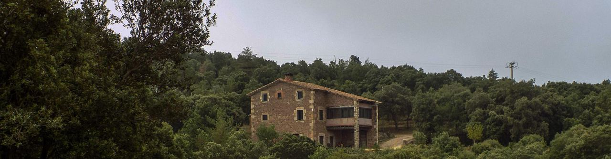

Ruta · Seva
Itinerari circular que ens porta a voltar pels boscos de Figueroles , passat el torrent Roig , fins al puig Solina i el Brull . Bonics i profunds alzinars ens acompanyaran durant tot el…